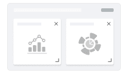
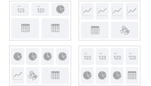
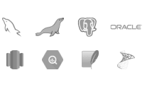
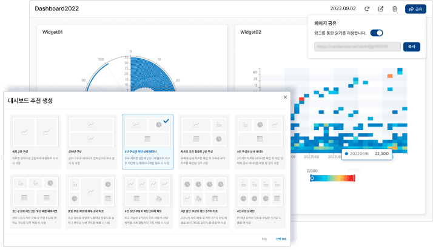
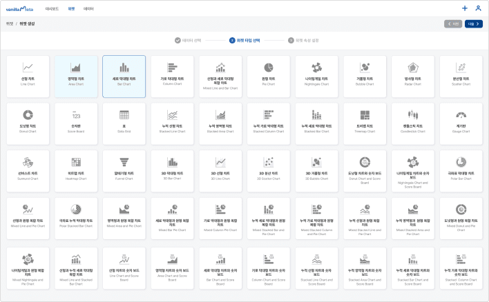
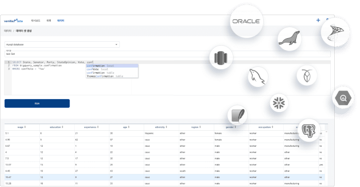

데모 보기
데모 보기

Why VanillaMeta?
바닐라메타는 최신 데이터 탐색적 분석 및 데이터 시각화 솔루션입니다.
비즈니스 인텔리전스 도구를 대체하거나 보강할 수 있으며, 다양한 데이터 소스와 잘 통합 됩니다.
이러한 바닐라메타는 Github에서 Open Sorce로 제공 받아 사용하실 수 있습니다.
Feature of VanillaMeta
-
코딩없이 차트 위젯 제작
연결된 데이터베이스를 지원하는 차트 중 선택 후
설정화면을 통해 코딩없이 위젯 제작이 가능합니다. -
50개 이상의 차트 지원
50개 이상의 다양한 차트 지원으로
최적의 분석을 위한 차트 활용이 가능합니다. -
사용자 맞춤형 대시보드 편집 및 공유
사용자가 설정한 위젯을 자유로운

레이아웃으로 편집 및 공유가 가능합니다. -
대시보드 템플릿 디자인 추천
대시보드 템플릿 디자인 추천을 통해

빠르고 편리하게 편집이 가능합니다. -
SQL 쿼리 편집기 & 데이터 미리보기 제공
SQL 쿼리 편집기를 통해 빠르게 데이터를 편집하고
미리보기를 통해 데이터를 확인할 수 있습니다. -
다양한 SQL 데이터베이스 즉시 지원
다양한 SQL 데이터베이스 지원 기능을 통해

빠르게 데이터를 연결할 수 있습니다.
Feature detail
-

대시보드 분석 시각화
사용자 맞춤형 대시보드 편집 및 공유와
대시보드 템플릿 디자인을 추천합니다. -

시각화 위젯 제작
코딩없이 차트 위젯 제작 가능하며
50개 이상의 차트를 지원합니다. -

최신 데이터베이스와
통합고급 SQL 쿼리 편집기 및 데이터 미리보기
가 가능하며, 다양한 SQL 데이터베이스에
대해 즉시 지원합니다.